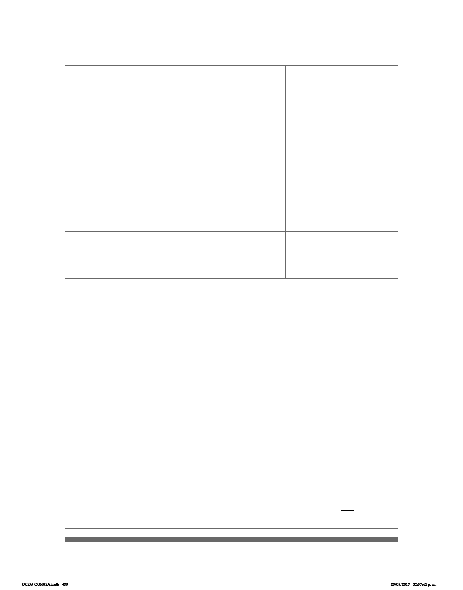

459
TRAER“aquí”
MAMÁ“izquierda”
QUITAR“mesa”
Tú-MOSTRAR-a-ella
Él-DAR-A mí
_________________neg.
GLOSA-GLOSA-GLOSA
La información espacial o locativa sobre una seña está en
cursiva y entre comillas, inmediatamente después de la
glosa.
Las palabras en cursiva antes y después de la exión de
los verbos indican el sujeto y los objetos del verbo
Existen varias maneras de formar una oración en forma
negativa. Todas están acompañadas por el indicador,
_______neg_
, el cual es:
1.- Sacudir la cabeza
2.- Fruncir las cejas
Las formas diferentes de oraciones negativas son:
1. Uso de NO*. La palabra NO puede encontrarse ya
sea antes del verbo o al nal de la oración.
2. Uso del indicador negativo.
_______neg_
, puede ser
utilizado en forma aislada para negar una oracióm simple.
pos-
muy
pos-MÍO
pos-SUS
__muy
MI AMIGO GRAVE
Mi amigo esta muy grave
Mientras que los pronombres
posesivos MI, SU, SUYO se
señan con la conguración
de la mano ¨P¨.
Las localizaciones son las
mismas que se usaron con
los pronombres personales.
La ¨P¨ se mueve en la
dirección del ¨poseedor.¨
NUESTRO (A) Con la
configuración manual “U”
se hace un movimiento
de derecha a izquierda
semicircular.
Intensidad, cantidad
Símbolos
Ejemplos Descripción
DLSM COMISA.indb 459 25/09/2017 02:57:42 p. m.